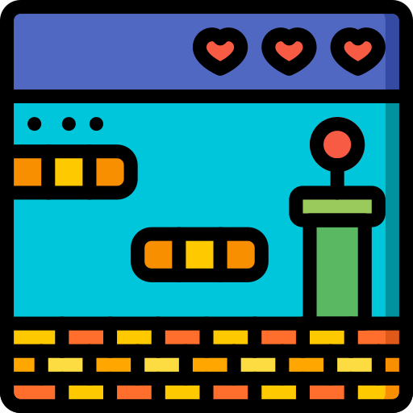

Bienvenido al mundo de Mario Bros
En el juego, Mario es retratado como un fontanero ítalo-estadounidense que, junto con
su hermano menor Luigi, tiene que derrotar a las criaturas que han venido de las
alcantarillas de Nueva York. El juego se centra en la exterminación de estas,
volteándolas sobre sus espaldas y pateándolas.

Jugabilidad
Mario Bros. presenta a dos fontaneros italianos, los hermanos Mario y Luigi, que
tienen que investigar las alcantarillas después de que extrañas criaturas han
estado apareciendo allí. El objetivo del juego es derrotar a todos los enemigos en
cada fase
Desarrollo
Mario Bros. fue creado por Shigeru Miyamoto (1952-) y Mitsuharo Sato con una
historia creada también por Shigeru Miyamoto, principales desarrolladores del
videojuego Donkey Kong. Él diseñó un prototipo en el que Mario "saltaba y
rebotaba", que lo hizo quedar satisfecho

Lanzamiento
El juego de arcade se lanzó en 1983, pero hay fechas de lanzamiento
contradictorias. La revista Game Machine informó que el juego hizo su debut en
América del Norte en la feria AMOA del 25 al 27 de marzo y entró en producción
masiva en Japón el 21 de junio

Recepción
Mario Bros. fue inicialmente un éxito modesto en las salones recreativos, con un
estimado de 2000 gabinetes de juegos vendidos en los Estados Unidos en julio de
1983.Continuó siendo un gran éxito en las salas de juegos estadounidenses.En
Japón, Game Machine incluyó Mario Bros